User’s Manual v1.0
November 2013
0. Introduction............................................................................................................ 3
0.1. How to read this manual................................................................................ 3
0.2. About Drainware........................................................................................... 3
1. Requirements......................................................................................................... 4
1.1. Operating System.......................................................................................... 4
1.2. Minimum Hardware...................................................................................... 4
2. Installation.............................................................................................................. 5
2.1. Signing up in the system................................................................................. 5
2.2. Software endpoint installation...................................................................... 7
2.3. Advanced Installation.................................................................................... 7
3. Initial configuration.............................................................................................. 11
3.1. Credentials.................................................................................................. 11
3.2. Subscription................................................................................................ 11
3.3. Groups......................................................................................................... 12
3.4. Users........................................................................................................... 12
3.5. Authentication............................................................................................ 12
3.6. Time Zone.................................................................................................... 13
4. Dashboard............................................................................................................ 14
5. DLP........................................................................................................................ 15
5.1. Policies........................................................................................................ 15
5.2. Rules........................................................................................................... 19
5.3. Files............................................................................................................. 21
5.4. Network Sites.............................................................................................. 21
5.5. Applications................................................................................................ 22
5.6. Advanced..................................................................................................... 23
5.7. Notifications................................................................................................ 24
6. Sandbox................................................................................................................ 26
6.1. Applications................................................................................................ 26
7. Inspector............................................................................................................... 27
7.1. Remote search............................................................................................ 27
7.2. Multiple Remote Searches........................................................................... 28
7.3. Remote Files explorer.................................................................................. 29
7.4. Remote Devices........................................................................................... 30
8. Reporter................................................................................................................ 33
8.1. DLP Events................................................................................................... 33
8.2. DLP Stats..................................................................................................... 35
8.3. Sandbox Events............................................................................................ 38
8.4. Sandbox Stats.............................................................................................. 38
8.5. Inspector search reports............................................................................. 39
9. Troubleshooting.................................................................................................... 40
9.1. Corporate Proxy........................................................................................... 40
This manual is written either to be read sequentially the first time, or can be used as a reference guide. During this reading you can find notices in the following formats:
 Annotations: Concept
clarifications
Annotations: Concept
clarifications
Important!:
Important
concepts to keep in mind
Tip: Tricks, shortcuts and other tips
Drainware is a security platform that is like a service. It has several modules
to protect the information and/or the computers that contain this information.
We offer Freemium license which means you can start using it for free with some restrictions in its
features.
Drainware can be deployed on computers with Microsoft Windows OS
installed. The currently supported versions are the following:
|
OS |
Architecture |
|
Windows XP |
x86 |
|
Windows 7 |
x86/x64 |
|
Windows 8 |
x86/x64 |
 Important!
Important!
Windows XP is
supported only with Service Pack 3 or later. We also have support for Windows
XP SP2, but you have to install the following components:
CPU: Intel Pentium III 1 GHz or faster
RAM: 1 GB (2GB recommended)
HDD: 200 MB
Before installing Drainware, it’s necessary to have
an account in the platform. To sign up in the system you’ll have to go to the official Drainware website at https://www.drainware.com and click on the sign up button in the top right menu.
This will show us a
form where we must input the information requested: registry data, company name, VAT ID, and number of
employees.
The e-mail will be associated with you account and it won’t be able to be
changed in the future.
For the number of employees field, we only have to consider the ones that normally work with a
computer.
 Important!:
The
password must have at least 8 characters.
Important!:
The
password must have at least 8 characters.
Afterwards, you will receive an e-mail that will allow you to
validate your new account.
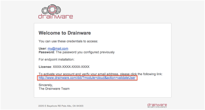
When the license has been validated, it will redirect us to the
sign in page where we will have to input the e-mail and the password that we have entered in before.
2.2. Software endpoint installation
Once we have the license validated and entered our credentials, we
are correctly signed in and able to download the software. After sign in, we
have the possibility to download the installer. To the right of the download link, we have the license number that is a 16 digit code that we will need during the installation.
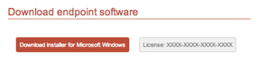
This
installer will install the 32 or 64-bit version, depending on the operative system used.
It is possible to deploy the endpoint in an unattended manner. This is very useful
if you have a lot of users and you want to deploy it on a mass scale.
To do that, you can find the .msi installers available in the
following URL
The procedure to install it through the command line is below (where you must
replace the red text by your license number):
|
msiexec /i file.msi /quiet /noreboot DDI_LIC=XXXX-XXXX-XXXX-XXXX |
If
you prefer you can use this logon script:
Name:
drainware_logon.vbs
|
Function
GetWindowsArchitecture(strComputerName) Set
objWMI = GetObject("winmgmts://" & strComputerName &
"/root/cimv2") Set
colItems = objWMI.ExecQuery("Select * from Win32_OperatingSystem",
, 48) For Each
objItem In colItems GetWindowsArchitecture
= "32-bit" If
left(objItem.Version,3) >= 6.0 Then GetWindowsArchitecture
= objItem.OSArchitecture End
If Next End Function Function
GetProgramsFolder() Set
wshShell = WScript.CreateObject("WScript.Shell") GetProgramsFolder
= wshShell.ExpandEnvironmentStrings("%programfiles%") End Function Function
ExistDrainwareSecurityDir() Set
objFSO = CreateObject("Scripting.FileSystemObject") ExistDrainwareSecurityDir
= objFSO.FileExists(GetProgramsFolder() & "\Drainware\Drainware
Security Endpoint\DrainwareSecurityAgent.exe") End Function Function
DownloadDSE(strRemoteDSE, strLocalDir) Set
objFSO = CreateObject("Scripting.FileSystemObject") objFSO.CopyFile
strRemoteDSE, strLocalDir & "\" End Function Function
InstallDSE(strLicense, strRepository) If Not ExistDrainwareSecurityDir() Then Set
wshShell = WScript.CreateObject("WScript.Shell") Select
Case GetWindowsArchitecture(".") Case
"64-bit" Rem
Msgbox "Installing Endpoint
64-bit " & strLicense strRemoteDSE
= strRepository & "\SetupCloud.msi" strLocalDSE
= wshShell.ExpandEnvironmentStrings("%temp%") &
"\SetupCloud.msi" Case
"32-bit" Rem
Msgbox "Installing Endpoint
32-bit " & strLicense strRemoteDSE
= strRepository & "\SetupCloud32.msi" strLocalDSE
= wshShell.ExpandEnvironmentStrings("%temp%") &
"\SetupCloud32.msi" End
Select DownloadDSE
strRemoteDSE, wshShell.ExpandEnvironmentStrings("%temp%") Rem
Msgbox "msiexec /qn /i " & strLocalDSE & "
ddi_lic=" & strLicense Rem
WshShell.Run "msiexec /qn /i " & strLocalDSE & "
ddi_lic=" & strLicense Msgbox
"Your computer will restart after a few seconds" End If End Function Dim strLicense Dim strRepository strLicense =
WScript.Arguments(0) strRepository =
WScript.Arguments(1) InstallDSE
strLicense, strRepository |
Usage:
drainware_logon.vbs
LICENSE LOCATION
example:
drainware_logon.vbs XXXX-XXXX-XXXX-XXXX \\mynas\resources\dlp\
The
location must contains both msi files (for x86 and x64)
Useful
links
In this section, we will go through the initial configuration of Drainware. These are the available
options in the left menu (red area) of Drainware once you sign in.
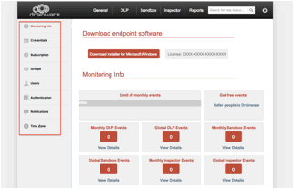
In this section we can update our password. If we want to change it, we
also have to fill in the current password.
Drainware has two different subscription
types. One is the Freemium option, which offers a monthly service with a limit of 500 security events; after 500 events, the organization will be unprotected until the first
day of the next month.
On the other hand, we offer a Premium subscription that is based on the number of users you wish to
protect. The Premium subscription includes unlimited events (as long as use remains reasonable).
In this section, it is possible to check the validity of the subscription
and upgrade in the case of using a Freemium subscription.
If you have questions about this
section, please write an e-mail to sales@drainware.com and our sales team will be happy to assist you.
It is possible that in your organization
you would like to apply different policies depending on groups of users. We can
organize the groups by areas or departments, depending on the requirements of
the organization.
In this section we can create the groups
inside our platform and then apply policies directly over them.
It is possible to integrate the groups
in the organization directly with Drainware, and this topic is explained in more detail in section 4.5.
Every time that user logs into a computer protected with Drainware, the
server is notified, and it will register it in the system. From that moment, we can associate that user to one or more groups.
To integrate Drainware with your
organization, we offer an authentication module. We have 2
different options to configure the authentication module: local authentication or LDAP.
By default, Drainware works in the local authentication mode, in such a way that the group information is already in our platform.
With the LDAP option, it’s possible to integrate an LDAP server or Active Directory Domain to be able to use the users and groups of the
organization.
If you want to integrate LDAP, it’s
necessary to open the LDAP port to the Internet. We
recommend opening it with SSL exclusively.
If you want to integrate it with Active
Directory, you should use the following information:
|
Field |
Value |
|
Type |
LDAP |
|
SSL |
Depending on your configuration |
|
Version |
2.0 |
|
Host |
IP or Computer Name |
|
Port |
389 or 636 if it’s SSL |
|
DN |
DOMAIN\user |
|
Password |
User Password |
|
Base |
DC=DOMAIN, DC=LOCAL |
|
User Attr |
sAMAccountName |
|
Recursive Groups |
Optional |
We also have the “Recursive Groups” option. This option allows users in nested groups to resolve the groups to which they don’t directly belong.
Annotation: If an LDAP user doesn’t belong
to any of the imported groups, it will belong to the default group
automatically.
Important!:
When the LDAP is integrated, all users will be
available in the platform however same doesn’t happen with the groups. The groups must be imported one
by one from the groups section, which will also be integrated with LDAP.
It’s possible that the
employees of an organization work or travel around the
world. Therefore, in Drainware, we work with the UTC time zone. In order to translate the time between different
time zones, we offer the possibility to select the time zone where the administrator wishes to see the events.
The main window of Drainware shows an
overview of the security events that happened since the installation of
Drainware. It also shows the details of the events that happened since the beginning of every month.
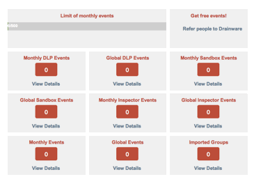
For Freemium users, it shows a status bar that shows
the monthly events. When the number of events reaches 500, Drainware will stop working until the beginning
of the next month. The administrator will then receive an e-mail
notification that the organization is not protected
with Drainware anymore.
 Tip:
Tip:
To the right of the monthly events bar you can find a link to get more
free events per month in the Freemium version. To receive more free events, you only have to share a link with the reference code. For
every verified installation referred to this code, Drainware will give you 100
extra free
events
per month.
In the DLP module (Data Leak Prevention), we can control the
confidential information inside the organization to prevent data leaks.
The policies define what information you
want to monitor and what action will be carried out. In the policies creation section, we provide a wizard that makes the
whole process easier. We’re going to create a
policy with the name POL001 and the description of “Policy 1”.
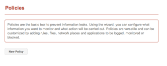
In the first step we have to provide a
name and a short description for the policy:
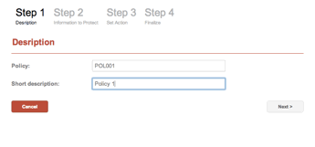
In the next step we have to define the information that we want to
protect.
We can see the next menu:
•
Concepts / Subconcepts: patterns
predefined by Drainware to identify the information.
•
Applications: applications that we’ll
deny any access to confidential information.
As we continue
configuring Drainware, this section will contain other elements such as rules, files, and network sites; which will see in the
next sections.
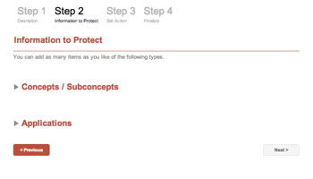
If we expand the Concepts/Subconcepts we will see a big list of
categories. We can include a sub concept in our policy like Visa or the credit cards concept that would include all
credit card types.
In the applications section, we can see
a list (that can be extended by the user) that allows the blocking of several
programs.
In the Step 3 we can see a list of the
groups that we have already imported, the action that will be carried out, and the severity (how severe is the group of users that triggered the policy).
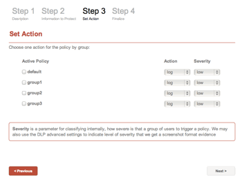
We only have to select the groups that
we want to be affected by the policy. When defining the action, it can be:
• Log: logs the event in the Drainware database for audit purposes.
• Alert: an e-mail is sent by default to the e-mail address used for sign
up in Drainware, but it can be overridden by another address specified only for this
policy.
• Block: prevents filtering of information.
In all cases, the employee that executes the policy will see a
notification.
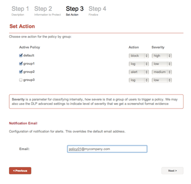
We only have to click the “Finalize” button and the policy will be created.
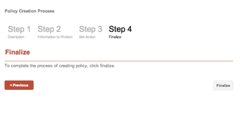
Every time we create a policy, it will
appear in the policies list. In this list, we have 3 buttons:
•
Configuration: we can configure the
information to protect, like we configured in step 2.
•
Action: we can re-define actions for the
different groups, like we configured in step 3.
•
Remove: removes the policy.
Once the policy is created, it can’t be
renamed.
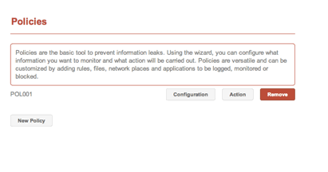
With “Rules”, we can define our own information patterns to protect
inside the policies. We can include, for example, confidential footers that we
usually introduce in documents with confidential information. We can also add regular expressions that describe
any confidential documents that we want to protect.
To create a rule, we have to introduce a name without spaces and
special characters (A), a description (B), optionally, we can include a verification function
in PHP (C) and we can define which policies we want to associate with this rule (D). Like policies, rules can’t be renamed
either.
Tip:
If we want to use a verification function in PHP, it will
receive the variable “$match” that contains the resulting match after the regular expression
is applied. It will be necessary that after analyzing $match, it will
assign TRUE (accept match) or FALSE (deny match) to the “$return_val” variable.
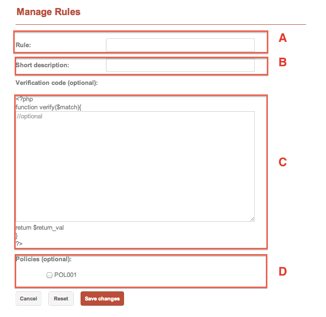
For very exceptional cases, it’s
possible that a rule can’t cover all our requirements and we’d want to sign up a file. In these cases we can upload a file to help Drainware to
identify when someone is trying to filter information.
The procedure is very simple. We can upload one or more files and they
will be automatically available to associate to our policies. We only have to
go to the policy configuration and select the filename.
Every time we upload a file, this will
be available in the new policies wizard.
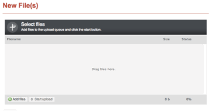
 Important!:
Important!:
Before uploading a
file, we suggest to use a unique filename or even put the current date to
distinguish it from another with the same name.
In the network sites section, we can add Windows shared folders with the format \\server\resource.
This functionality is one of the most
interesting ones. The endpoint software is ready to identify all the files
copied in a computer from the shared folder added in Drainware. Once the file
is copied, Drainware will check every file or every copy of them throughout the
computer’s file system, allowing you to work with it, but
denying its filtration.
For Network URI, we have to input the shared folder location., We must also introduce a short description, and then select the
different policies to apply.
It will be available in the new policies
wizard.
 Important!:
Important!:
Only files that have
been copied after add the shared folder will be monitored.
To add more applications and include them in our policies, we can add them in the “Manage Applications” section.
To add a new application, we will need
its name, for example iexplorer.exe, or skype.exe. Similarly to the other
sections, we have to put a short description and
select the policies to associate with it. It will be
available in the new policies wizard.
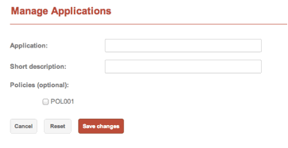
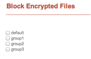In the Advanced section of Drainware, we
can configure the behavior of the DLP. We have 3 sections to configure its
behavior.
The first section will allow us to block
the access to encrypted information within particular
groups. The behavior will be the same as a file affected with blocked policy.
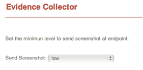
The second section will allow us to
collect evidence every time an event is carried out. This configuration is
directly related to an action defined in
the policy, where we can define a criticality level for each group. In this configuration we can select ‘None’ if we don’t want to collect evidence or
the minimum level from which we would want to make for the collection.
If we select the low level, the collection will be available for the low,
medium, and high levels. If we select the medium level, it will be
available only for the medium and high levels. And if we select high, it will be available
only for that level.
 Important!:
Important!:
The configuration of
the evidence collector is only available for the Premium users. The Freemium users will
receive the first 3 screenshots every month.
In the last section we can globally enable or disable modules that affect all policies. In Drainware we consider 3 types of
elements:
•
Source: information origin
•
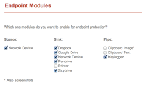Sink: information destination
•
Pipe: information channel
In sources, we currently only have “Network device”. That allows us to recognize Windows shared folders. If we disable this origin, the “Network Sites” section will stop
working and it won’t be visible in the menu anymore.
In Sinks we have several modules that
monitor the application of the corresponding action (block, alert or log):
•
Dropbox
•
Skydrive
•
Google Drive
•
Network Device
•
Pendrive
•
Printer
Finally, in Pipes we can monitor:
•
Clipboard Image
•
Clipboard Text
•
Keylogger
 Important!:
Important!:
The keylogger module
doesn’t allow block the tipping, because until it isn’t written it can’t be
analyzed.
Notifications can’t be configured in the
DLP menu, they must be defined in the “General” section, but they are directly related with the DLP.
The notifications allow, as long as we
have a browser opened and logged in, the receiving of notifications in real time when an event is carried out.
We don’t recommend enabling the
notifications for all actions and events, because, if they are executed regularly, it can be annoying.
The notifications are HTML5
notifications and they are integrated with the desktop of the operating system, as long as the browser and the operating system support it.
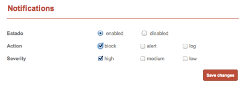
The Sandbox feature allows us to protect applications against virus. It’s not an
antivirus replacement, but rather, a complement.
Previously, hackers took advantage of
security problems in the server’s software to gain access to the organization. But a security suite was developed to enable firewalls, IDS,
IPS…
In the last few years, hackers have taken advantage of new vectors. Using tools like LinkedIn,
they can discover who a financially responsible person is, and what contacts he has.
From that moment they can make an attack
based on spear-phishing that consists of sent e-mails assuming his identity with an attached
PDF or an URL that steals data or opens a connection to the outside.
In Drainware, we develop rules that allow us to block the affected
applications before the system will be affected.
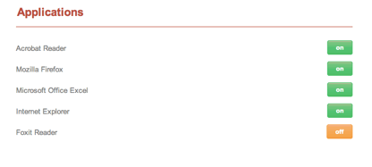
With the Inspector module, you can search in real-time over all the computers in
the organization.
It’s possible that in the organization we
have a person or a group of people working with the kind of information to which they shouldn’t have access. It could be done
unconsciously or premeditated. Either way, we can find out with the Inspector tool.
Furthermore, once we have experienced a leak of information, it is often very difficult to check all the computers where the related
document was. With Inspector, it is possible in seconds, to find very specific files, download
them, and even browse
through the file system of the computers affected.
With the remote search we can start to obtain results.
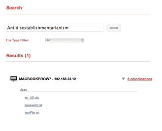
The search can take several minutes. The
results are shown grouped by the name of the computer where the file was found.
Expanding the results by computer, it’s possible to see the file details by clicking on it. We can see information about the
modification date, file name, mime type, creation date, and short information about the file header. It’s
also possible to download it.
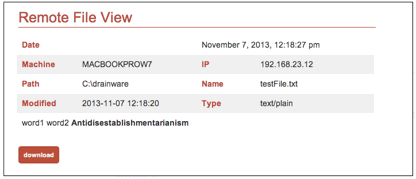
 Important!:
Important!:
You shouldn’t search
by very short terms or generic terms. The result can take too much time or it
can be unmanageable.
It’s possible to browse through one of
the computers listed in the results. To do this, you must click on the computer name or IP address (red area).
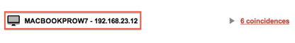
The file explorer feature is further detailed in section 7.3 of this manual.
If we want to search by a lot of terms,
it’s possible to use the Multiple Remote Searches function.
To use this feature, you have to create a file with all the search terms in one line, separated by commas. We can create different lines, each one with its
own keywords.
keyWordGroupA-1,
keyWordGroupA-2, keyWordGroupA-3
keyWordGroupB-1,
keyWordGroupB-2
keyWordGroupC-1,
keyWordGroupC-2, keyWordGroupC-3
The file extension must be TXT. In addition to uploading the file, we
must input a name for this report.
 Important!:
Important!:
You shouldn’t search
by very short terms or generic terms. The results can take too much time to obtain, or the results can be unmanageable.
The Remote Files Explorer allows us to inspect any computer in the organization with
Drainware installed.
We will have to provide some details
about the computer: computer name, IP address, and optionally, the path. From this point we can browse through any
device in the computer and even download files.
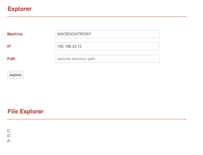
 Important!:
Important!:
Drainware is not
developed to be an FTP server. Downloading a file with several MB in size can take several
minutes until the download starts.
With this feature, we can see the
geographic position of all the devices that have Drainware
installed.
In most cases, the geolocation is performed through the IP address, but when the Wi-Fi is activated, it’s possible that the geolocation is
performed through Wi-Fi triangulation.
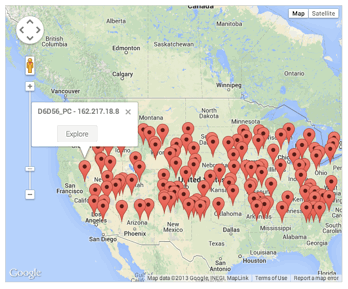
 Important!:
Important!:
Make sure that you
don’t refresh the webpage until all the endpoints have responded, especially in networks
with thousands of endpoints, as the webpage loading could take several minutes.
In addition to the geolocation of the devices, it’s possible to get
a network map encapsulating all the computers that belong to the same ranges.
To that effect, we will click on the Network View tab.
The results are shown in circles, where
every circle represents a range or a group of ranges.
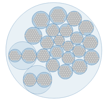
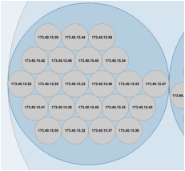It’s possible to click on the segments
that we want to inspect and see all the computers connected at that moment.
With the Reporter module, we can have access to the data recorded
by Drainware. We can get details of every module or statistic from the global
behavior of the DLP, Inspector, or Sandbox.
Once we open the DLP events information,
we can see a graph with all the events related to the data leak. Under the graph we can see a table with a list of related events, ordered from the most recent to the oldest.
The table has some controls at the bottom where we can refresh it or
browse through.
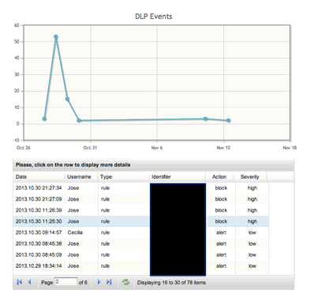
The list only shows a preview of the event. If we want to see detailed information, we must click on it.
The details of each event are shown in a
table that provides all the information related to the event. Depending on the configuration, it’s
also possible to see a screenshot done in the same moment that the event was carried out.
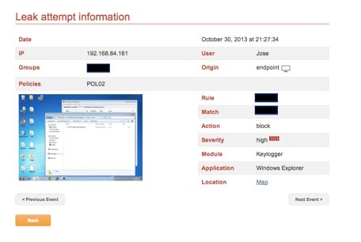
Annotations: Freemium users can
only see the first 3 screenshots every month.
Under the table, there is a button which
generates a report with the latest security events.
If we want to find events by range of dates, event type, policy,
severity, rule, etc., we can use the “Advanced Query” system.
As we can have a result with too many events, it’s
possible to fill in the maximum number of events we want to show in the result.
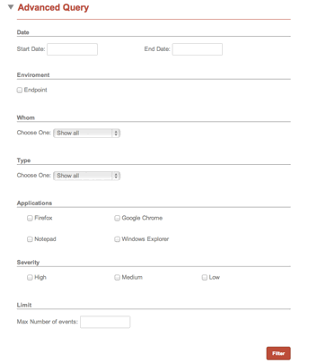
Every time a query is generated, it’s
possible to export the results in CSV format. In order to do this, you have to click on the Generate Report button at
the end of the page:
The events and detail of events information is interesting, but in many
cases, it’s necessary to have view at a higher level of what is happening with confidential
information or to know how the policies that we have configured are working. To
do so, we will create the data analysis and statistics.
In the same graph, it represents the average between severity, action, and number of events. The policies with more events
are located to the right, with the vertical axis representing the average of the actions carried out, where the block is the highest part. The average of the severity is shown in the
size of the circle. In the top left combo box you can select the period of
time.
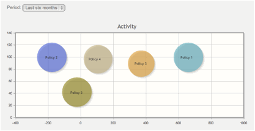
In this graph we can see the groups that
carried out more events of one policy. In the top left
combo box you can select the period of time. In the top right combo box you can
select the policy.
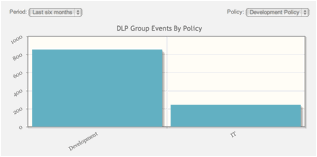
In this graph, we can see the users that carried out more events of
one policy. In the top left combo box you can select the period of time. In the
top right combo box you can select the policy.
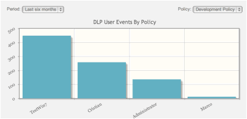
With the policy graph, we can analyze the policies with more activity. In
the top left combo box you can select the period of time.
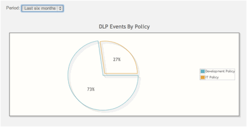
With the policy graph we can analyze the
groups with more activity. In the top left combo box you can select the period
of time.
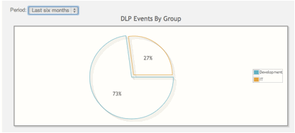
We can see a graph with related events with attempts to abuse applications. Under the
graph we can see a table with the list of events, ordered from the most recent
to the oldest. The table has some controls in the bottom where we can refresh it or
browse through.
With the applications graph, we can analyze the policies with more activity. In
the top left combo box you can select the period of time.
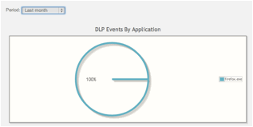
With the policy graph, we can analyze the groups with more activity. In the
top left combo box you can select the period of time.
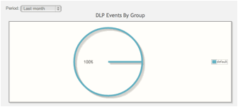
When we make multiple remote searches from the Inspector section, the results are generated in this section. We can find
the report by range of dates to download in Microsoft Excel format.
Drainware supports connection though a proxy,
either configured in the system, or auto-configured. However, if the
proxy uses authentication, it’s necessary to enable “*.drainware.com” in the accessible domains without
authentication.
If you are using QUID, the
configuration would be the next one:
|
acl drainware dstdomain .drainware.com acl CONNECT method CONNECT acl dwCONNECT dstdomain .drainware.com http_access allow CONNECT dwCONNECT localnet http_access allow drainware localnet |